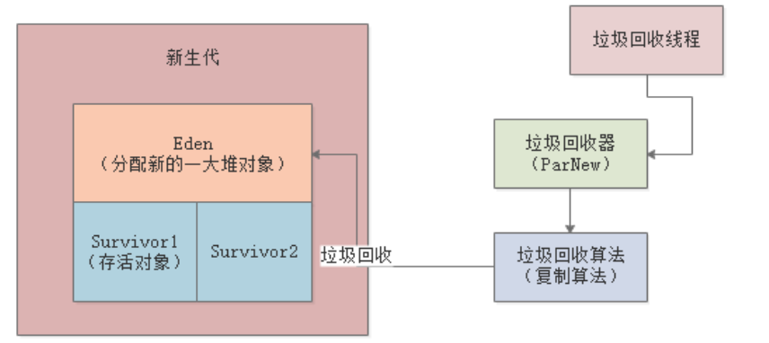
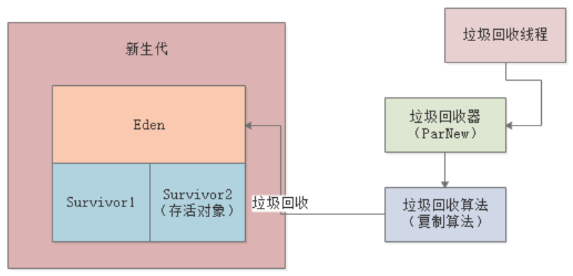
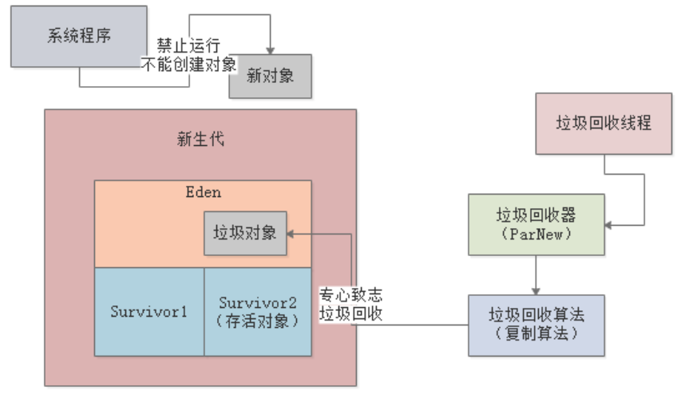
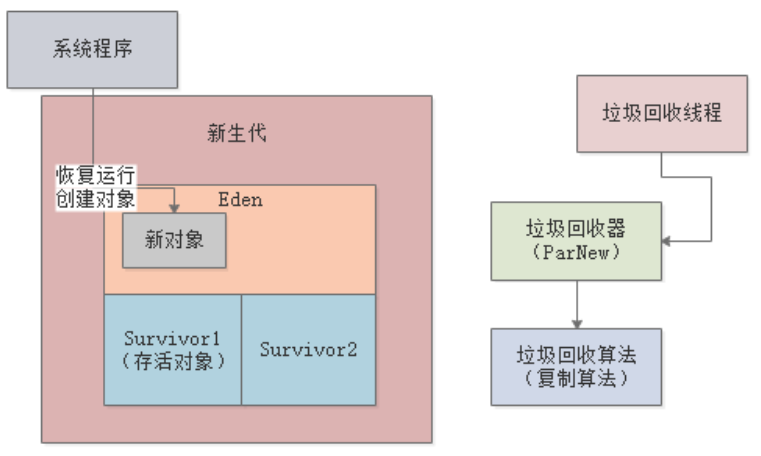

在新生代和老年代进行垃圾回收的时候，都需要使用回收器进行回收，不同的JVM 垃圾回收器会有所不同，不同区域一般也采用不同的垃圾回收器。JVM常见的垃圾回收器有以下几种，我们先来简要看下，后续会针对每一种GC专门详细讲解：
Serial/Serial Old收集器是最基本也是最古老的垃圾收集器，它是一个单线程收集器，并且在它进行垃圾收集时，必须暂停所有用户线程，也就是发生“Stop the World”。一般JVM都不再使用该收集器。
ParNew收集器是Serial收集器的多线程版本。新生代并行回收，采用复制算法，老年代串行回收，采用标记整理算法。所以，该收集器一般只用于新生代。
CMS（Current Mark Sweep）收集器，目标是使回收停顿时间最短，也是多线程机制，采用标记整理算法，该回收器一般用于老年代，生产环境上也经常会使用该垃圾回收器与其它GC搭配使用。
G1最大的特点是没有物理上的新生代和老年代，它们是逻辑的，G1将整个Java堆划分为多个大小相等的独立区域（Region），对新生代和老年代进行统一收集，并且采用了更加优秀的算法和设计机制。
上一节，我们提到过JVM在进行垃圾回收时，会挂起除GC线程以外的所有其它线程，这就会导致系统出现卡顿，这就是JVM所谓的Stop the World机制。
假设当前JVM新生代的状态如下，Eden区已被填满，Survivor1区存放着上一次Minor GC后的存活对象，这时候即将触发Minor GC，由垃圾回收线程使用垃圾回收器（新生代一般使用ParNew，采用复制算法），使用特定的垃圾回收算法进行回收，如下图：

回收时，Eden区和Survivor1区的存活对象会被转移到Survivor2区，接着Eden和Survivor1中的垃圾对象都会被回收掉：

JVM在进行垃圾回收时，会让我们的系统暂停，不再创建新的对象，同时让GC线程尽快完成垃圾回收的工作——即标记和转移存活对象：

一旦本轮GC结束，就可以恢复我们的系统程序，继续在Eden区创建新的对象了，如下图：

上面就是Stop the World的整体流程，Stop the World会导致客户端的请求出现卡顿，短则几百毫秒，长则几秒甚至几分钟。所以，无论是Minor GC还是Full GC，都要避免频率过高，这也是使用JVM过程中最需要关注和优化的地方。
从下一章开始，我们将详细讲解常见的三种垃圾回收器的工作原理，不同回收器Stop the World的流程也有所区别，GC的核心目标其实就是降低Stop the World的总体时间，这也是JVM不断演化的终极思路。